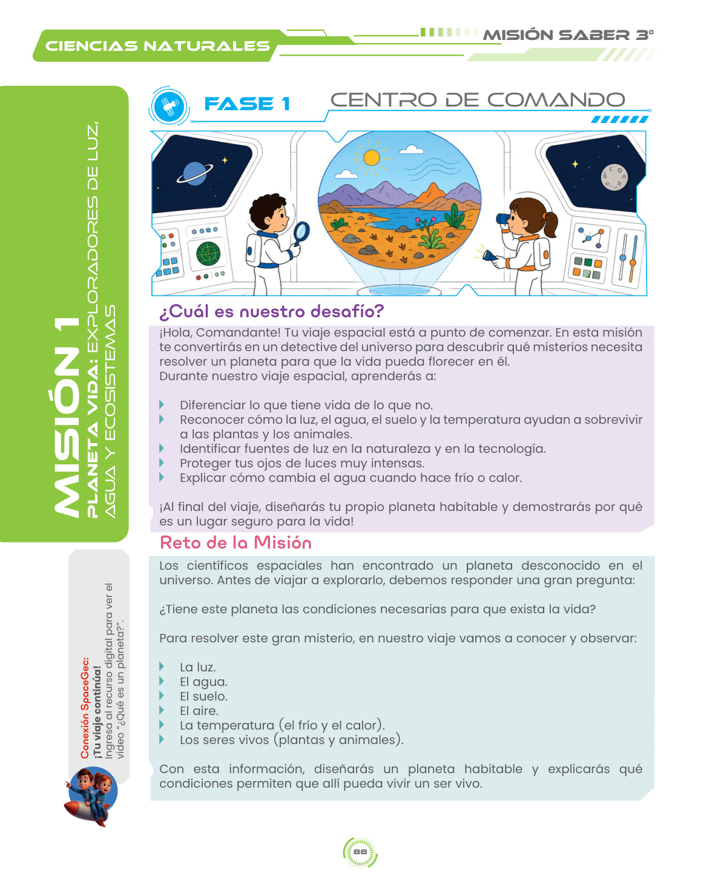

Comandante Leo
Guía de Misión
🎯 Centro de Comando
¡Bienvenido al Centro de Comando! En esta fase recibes tu misión y preparas tus herramientas de explorador. Haz clic en cualquiera de los puntos circulares interactivos en la página para descubrir el propósito pedagógico de cada sección.